Pets
Bacon Q Dog

Bacon Q. Dog is a 9yr old labradoodle. He prefers to spend his days lounging among the three different beds/couches that his family has gifted him. He enjoys a walk or two around the neighborhood, as long as he can pretend that he doesn't see any of the other animals to avoid the embarrassment of not wanting to admit he has no wolf-like skills in chasing them.
At night just as the rest of the family is ready to relax, Bacon suddenly wants to release all of his energy. He will place his toys on a mini couch and frantically drag the couch around, giving his toys "a ride." There is also a lot of rolling. Lots and lots of rolling.
Photo Gallery


Likes
- Belly rubs
- Playing tug-of-war
- Sneaking onto the couch
Sunny Smile
Sunny Smile is a 4yr old Scottish breed of retriever dog of medium size. It is characterised by a gentle and affectionate nature and a striking golden coat.
He enjoys swimming, fetching balls, hiking with family, cuddling, playing with other dogs, and learning new tricks, showcasing their intelligence and love for activity.
Photo Gallery

Likes
- Swimming
- Hiking With Family
- Playing With Other Dogs
Bailey J Cat
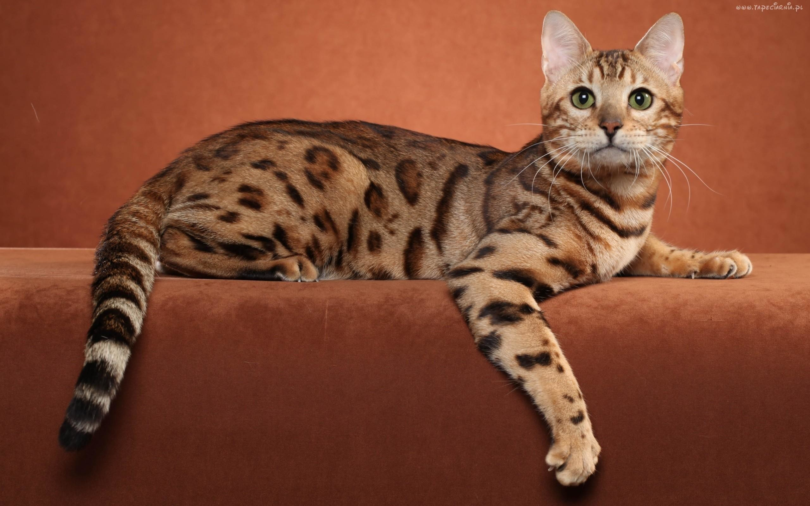Bailey, a one-year-old Bengal cat, boasts a striking coat with vibrant marbling. This energetic feline adores climbing and exploring every nook of her home.
Intelligent and affectionate, Bailey often engages in interactive play, showing a keen interest in puzzle toys. She's a delightful blend of curiosity and playful charm.
Photo Gallery
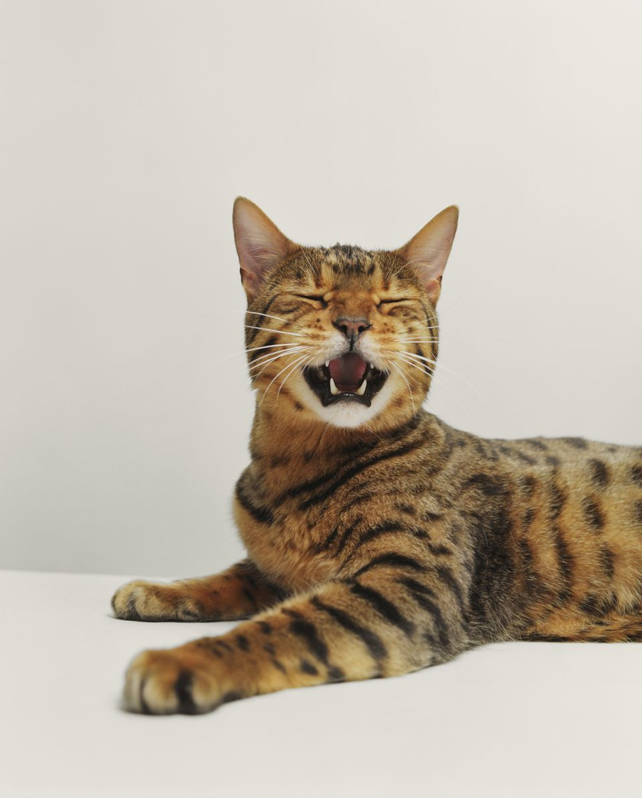 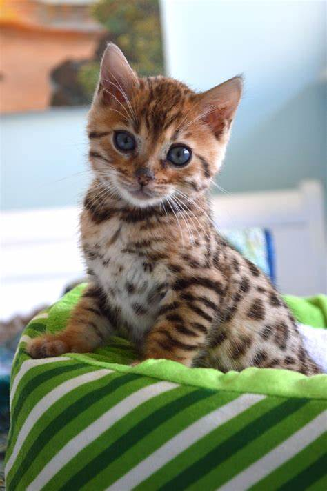 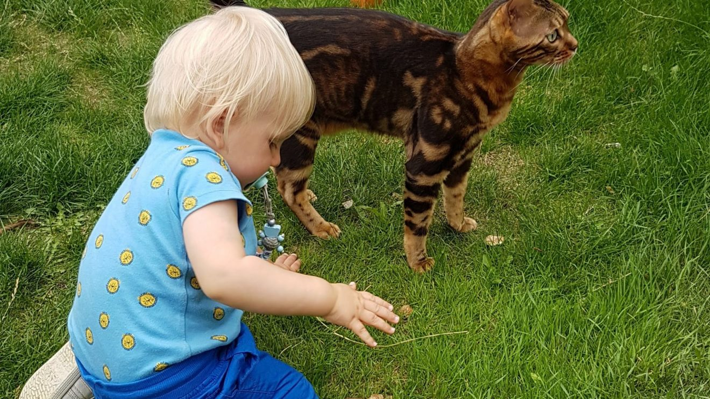Likes
- Tuna Cans
- Little Human Beings
- Playing With Puzzle Toys
Kiwi Parakeet
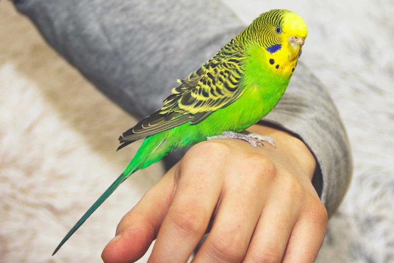Kiwi, a vibrant 2-year-old parakeet, boasts a dazzling green plumage, resembling her namesake fruit. She's a lively bird, full of chirps and trills, especially at dawn.
Kiwi adores interacting with her reflection, playing with bells, and nibbling fresh fruits. Her curious nature and playful antics bring joy to everyone around her.
Photo Gallery
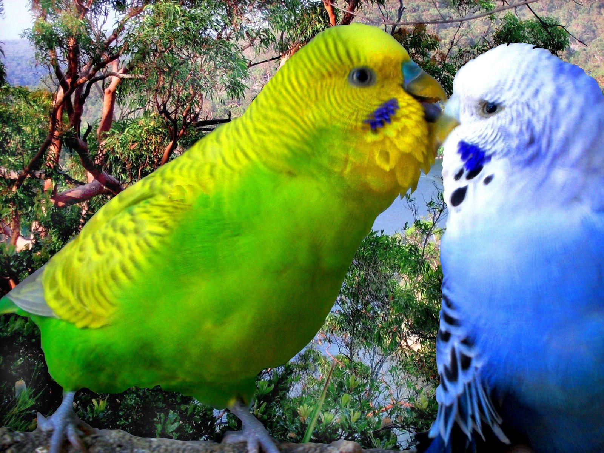 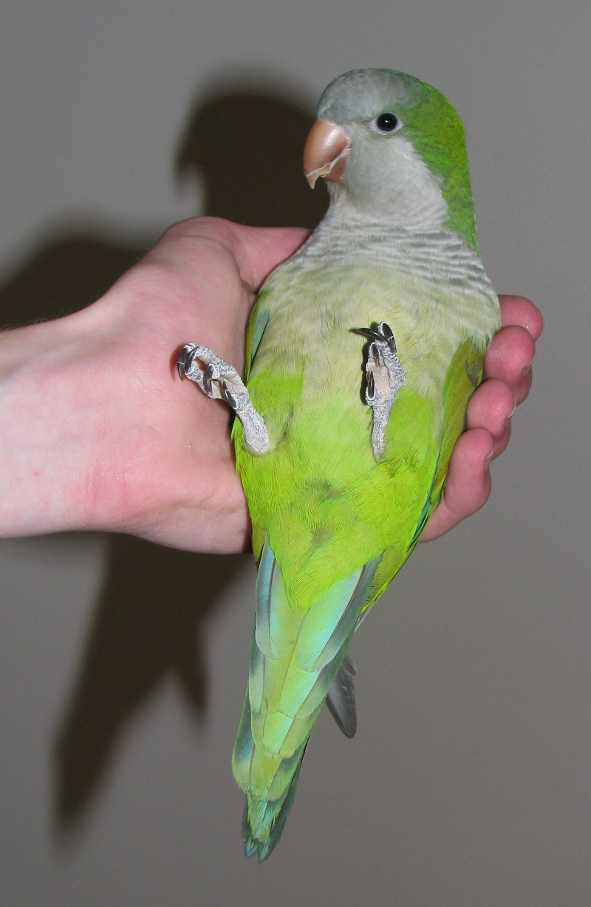 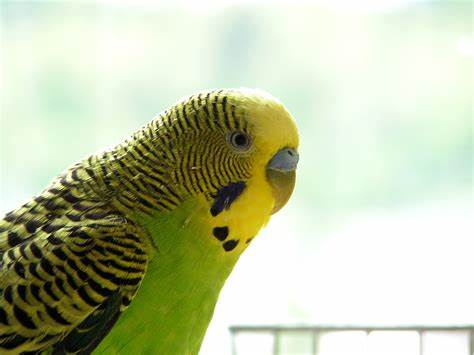Likes
- Sunflower Seeds
- Her Friends
- Playing With Sticks
Bella Netherland Dwarf
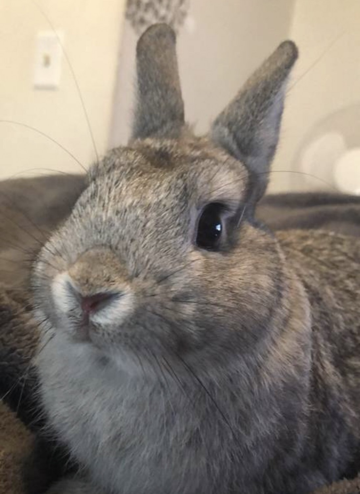At one year old, Bella, a delightful Netherland Dwarf rabbit, enchants all with her petite frame, adorned with a plush, silky coat.
Her sparkling eyes reflect a lively spirit, evident in her playful hops and cozy cuddles. Curious and loving, Bella's charming presence makes her an adorable and heartwarming addition to any household.
Photo Gallery
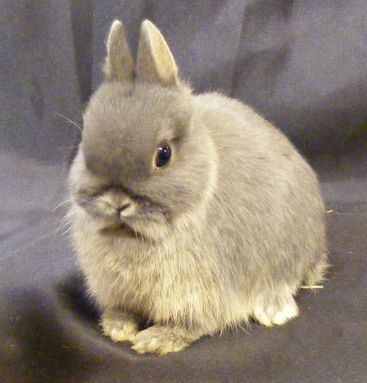 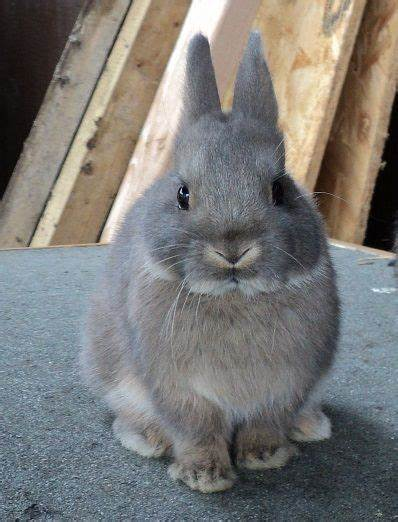 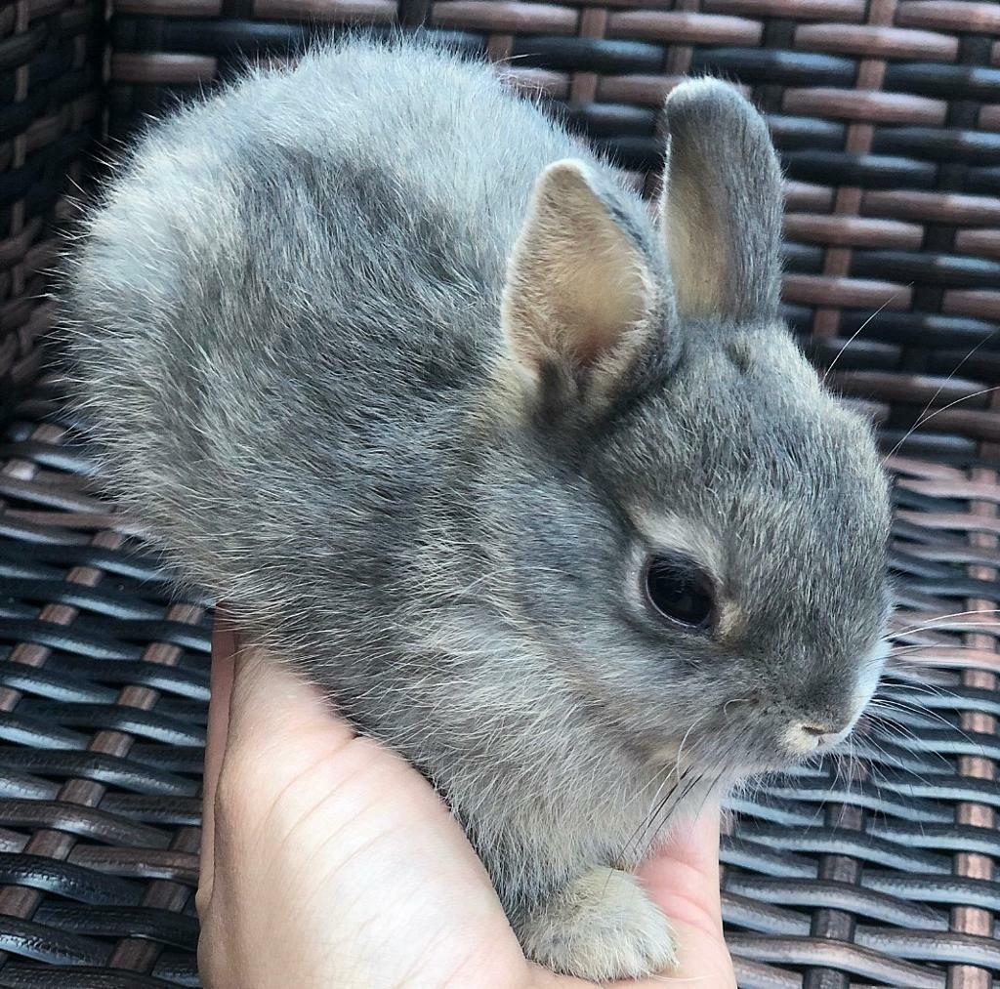Likes
- Carrots
- Puzzle Toys
- Her Owners